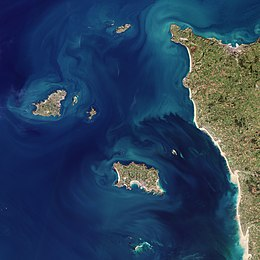
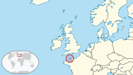

Channel Islands
|  Satellite photograph of the Channel Islands in 2018 | |
|  Location of the Channel Islands | |
| Geography | |
| Location | Northwestern Europe |
| Coordinates | 49°25′48″N 02°21′00″W / 49.43000°N 2.35000°W |
| Adjacent to | English Channel |
| Total islands | 7 inhabited |
| Major islands | |
| Area | 198 km2 (76 sq mi) |
| Highest point | Les Platons |
| Administration | |
| Capital and largest settlement | Saint Peter Port, Guernsey |
| Area covered | 78 km2 (30 sq mi; 39.4%) |
| Capital and largest settlement | Saint Helier, Jersey |
| Area covered | 118 km2 (46 sq mi; 59.6%) |
| Demographics | |
| Demonym | Channel Islander Channelean |
| Population | 171,916[1][2] (2021) |
| Pop. density | 844.6/km2 (2187.5/sq mi) |
| Additional information | |
| Time zone | |
| • Summer (DST) | |
| Internet TLD = GG and JE | |
{kind=link}
{kind=link}
The Channel Islands[note 1] are an archipelago in the English Channel, off the French coast of Normandy. They are divided into two Crown Dependencies: the Bailiwick of Jersey, which is the largest of the islands; and the Bailiwick of Guernsey, consisting of Guernsey, Alderney, Sark, Herm and some smaller islands. Historically, they are the remnants of the Duchy of Normandy. Although they are not part of the United Kingdom,[3] the UK is responsible for the defence and international relations of the islands as it is for the other Crown Dependency, the Isle of Man, and the British Overseas Territories.[4] The Crown Dependencies are neither members of the Commonwealth of Nations, nor part of the European Union. They have a total population of about 171,916, and the bailiwicks' capitals, Saint Helier and Saint Peter Port, have populations of 33,500 and 18,207 respectively.
"Channel Islands" is a geographical term, not a political unit. The two bailiwicks have been administered separately since the late 13th century. Each has its own independent laws, elections, and representative bodies (although in modern times, politicians from the islands' legislatures are in regular contact). Any institution common to both is the exception rather than the rule.
The Bailiwick of Guernsey is divided into three jurisdictions – Guernsey, Alderney and Sark – each with its own legislature. Although there are a few pan-island institutions (such as the Channel Islands Brussels Office, the Director of Civil Aviation and the Channel Islands Financial Ombudsman,[5] which are actually joint ventures between the bailiwicks), these tend to be established structurally as equal projects between Guernsey and Jersey. Otherwise, entities whose names imply membership of both Guernsey and Jersey might in fact be from one bailiwick only. For instance, The International Stock Exchange is in Saint Peter Port and therefore is in Guernsey.
The term "Channel Islands" began to be used around 1830, possibly first by the Royal Navy as a collective name for the islands.[6]: 158 The term refers only to the archipelago to the west of the Cotentin Peninsula. Other populated islands located in the English Channel, and close to the coast of Britain, such as the Isle of Wight, Hayling Island and Portsea Island, are not regarded as "Channel Islands".
Geography
[edit]{kind=link}
The two major islands are Jersey and Guernsey. They make up 99% of the population and 92% of the area.
List of islands
[edit]{kind=link}
{kind=link}
| Bailiwick of Jersey | Bailiwick of Guernsey |
|---|---|
| Permanently inhabited islands, with population and area | |
|
|
| Uninhabited islets | |
|
These lie off Alderney: These lie off Guernsey:
|
Names
[edit]The names of the larger islands in the archipelago in general have the -ey suffix, whilst those of the smaller ones have the -hou suffix. These are believed to be from the Old Norse ey (island) and holmr (islet).
The Chausey Islands
[edit]The Chausey Islands south of Jersey are not generally included in the geographical definition of the Channel Islands but are occasionally described in English as 'French Channel Islands' in view of their French jurisdiction. They were historically linked to the Duchy of Normandy, but they are part of the French territory along with continental Normandy, and not part of the British Isles or of the Channel Islands in a political sense. They are an incorporated part of the commune of Granville (Manche). While they are popular with visitors from France, Channel Islanders can only visit them by private or charter boats as there are no direct transport links from the other islands.
In official Jersey Standard French, the Channel Islands are called 'Îles de la Manche', while in France, the term 'Îles Anglo-normandes' (Anglo-Norman Isles) is used to refer to the British 'Channel Islands' in contrast to other islands in the Channel. Chausey is referred to as an 'Île normande' (as opposed to Anglo-normande). 'Îles Normandes' and 'Archipel Normand' have also, historically, been used in Channel Island French to refer to the islands as a whole.
Waters
[edit]The very large tidal variation provides an environmentally rich inter-tidal zone around the islands, and some islands such as Burhou, the Écréhous, and the Minquiers have been designated Ramsar sites.
The waters around the islands include the following:
- The Swinge (between Alderney and Burhou)
- The Little Swinge (between Burhou and Les Nannels)
- La Déroute (between Jersey and Sark, and Jersey and the Cotentin)
- Le Raz Blanchard, or Race of Alderney (between Alderney and the Cotentin)
- The Great Russel (between Sark, Jéthou and Herm)
- The Little Russel (between Guernsey, Herm and Jéthou)
- Souachehouais (between Le Rigdon and L'Étacq, Jersey)
- Le Gouliot (between Sark and Brecqhou)
- La Percée (between Herm and Jéthou)
Highest point
[edit]The highest point in the islands is Les Platons in Jersey at 143 metres (469 ft) above sea level. The lowest point is the English Channel (sea level).
Climate
[edit]
| ||||||||||||||||||||||||||||||||||||||||||||||||||||||||||||||||||||||||||||||||||||||||||||||||||||||||||||||||||||||||||||
History
[edit]{kind=link}
Prehistory
[edit]The earliest evidence of human occupation of the Channel Islands has been dated to 250,000 years ago when they were attached to the landmass of continental Europe.[8] The islands became detached by rising sea levels in the Mesolithic period. The numerous dolmens and other archaeological sites extant and recorded in history demonstrate the existence of a population large enough and organised enough to undertake constructions of considerable size and sophistication, such as the burial mound at La Hougue Bie[9] in Jersey or the statue menhirs of Guernsey.
From the Iron Age
[edit]{kind=link}
{kind=link}
Hoards of Armorican coins have been excavated, providing evidence of trade and contact in the Iron Age period. Evidence for Roman settlement is sparse, although evidently the islands were visited by Roman officials and traders. The Roman name for the Channel Islands was I. Lenuri (Lenur Islands) and is included in the Peutinger Table.[10]: 4 The traditional Latin names used for the islands (Caesarea for Jersey, Sarnia for Guernsey, Riduna for Alderney) derive (possibly mistakenly) from the Antonine Itinerary. Gallo-Roman culture was adopted to an unknown extent in the islands.[11]
In the sixth century, Christian missionaries visited the islands. Samson of Dol, Helier, Marculf and Magloire are among saints associated with the islands. In the sixth century, they were already included in the diocese of Coutances where they remained until the Reformation.
There were probably some Celtic Britons who settled on the Islands in the 5th and 6th centuries AD (the indigenous Celts of Great Britain, and the ancestors of the modern Welsh, Cornish, and Bretons) who had emigrated from Great Britain in the face of invading Anglo-Saxons. But there were not enough of them to leave any trace, and the islands continued to be ruled by the king of the Franks and its church remained part of the diocese of Coutances.
From the beginning of the ninth century, Norse raiders appeared on the coasts. Norse settlement eventually succeeded initial attacks, and it is from this period that many place names of Norse origin appear, including the modern names of the islands.
From the Duchy of Normandy
[edit]In 933, the islands were granted to William I Longsword by Raoul, the King of Western Francia,[12] and annexed to the Duchy of Normandy. In 1066, William II of Normandy invaded and conquered England, becoming William I of England, also known as William the Conqueror. In the period 1204–1214, King John lost the Angevin lands in northern France, including mainland Normandy, to King Philip II of France, but managed to retain control of the Channel Islands. In 1259, his successor, Henry III of England, by the Treaty of Paris, officially surrendered his claim and title to the Duchy of Normandy, while retaining the Channel Islands, as peer of France and feudal vassal of the King of France. Since then, the Channel Islands have been governed as two separate bailiwicks and were never absorbed into the Kingdom of England nor its successor kingdoms of Great Britain or the United Kingdom. During the Hundred Years' War, the Channel Islands were part of the French territory recognizing the claims of the English kings to the French throne.[citation needed]
The islands were invaded by the French in 1338, who held some territory until 1345. Edward III of England granted a Charter in July 1341 to Jersey, Guernsey, Sark and Alderney, confirming their customs and laws to secure allegiance to the English Crown.[13]: 2–4 Owain Lawgoch, a mercenary leader of a Free Company in the service of the French Crown, attacked Jersey and Guernsey in 1372, and in 1373 Bertrand du Guesclin besieged Mont Orgueil.[14] The young King Richard II of England reconfirmed in 1378 the Charter rights granted by his grandfather, followed in 1394 with a second Charter granting, because of great loyalty shown to the Crown, exemption forever, from English tolls, customs and duties.[13]: 5–10 Jersey was occupied by the French in 1461 as part of an exchange for helping the Lancastrians fight against the Yorkists during The War of the Roses. It was retaken by the Yorkists in 1468. In 1483 a Papal bull decreed that the islands would be neutral during time of war. This privilege of neutrality enabled islanders to trade with both France and England and was respected until 1689 when it was abolished by Order in Council following the Glorious Revolution in Great Britain.[citation needed]
Various attempts to transfer the islands from the diocese of Coutances (to Nantes (1400), Salisbury (1496), and Winchester (1499)) had little effect until an Order in Council of 1569 brought the islands formally into the diocese of Winchester. Control by the bishop of Winchester was ineffectual as the islands had turned overwhelmingly Calvinist and the episcopacy was not restored until 1620 in Jersey and 1663 in Guernsey.[15]
After the loss of Calais in 1558, the Channel Islands were the last remaining English holdings in France and the only French territory that was controlled by the English kings as Kings of France. This situation lasted until the English kings dropped their title and claims to the French throne in 1801, confirming the Channel Islands in a situation of a crown dependency under the sovereignty of neither Great-Britain nor France but of the British crown directly.
Sark in the 16th century was uninhabited until colonised from Jersey in the 1560s. The grant of seigneurship from Elizabeth I of England in 1565 forms the basis of Sark's constitution today.
From the 17th century
[edit]During the Wars of the Three Kingdoms, Jersey held out strongly for the Royalist cause, providing refuge for Charles, Prince of Wales in 1646 and 1649–1650, while the more strongly Presbyterian Guernsey more generally favoured the parliamentary cause (although Castle Cornet was held by Royalists and did not surrender until October 1651).[16][17][18]
The islands acquired commercial and political interests in the North American colonies. Islanders became involved with the Newfoundland fisheries in the 17th century. In recognition for all the help given to him during his exile in Jersey in the 1640s, Charles II gave George Carteret, Bailiff and governor, a large grant of land in the American colonies, which he promptly named New Jersey, now part of the United States of America.[19][20] Sir Edmund Andros, bailiff of Guernsey, was an early colonial governor in North America, and head of the short-lived Dominion of New England.[21]
In the late 18th century, the islands were dubbed "the French Isles". Wealthy French émigrés fleeing the French Revolution sought residency in the islands. Many of the town domiciles[clarification needed] existing today were built in that time. In Saint Peter Port, a large part of the harbour had been built by 1865.
20th century
[edit]{kind=link}
World War II
[edit]{kind=link}
The islands were occupied by the German Army during World War II.
The British Government demilitarised the islands in June 1940, and the lieutenant-governors were withdrawn on 21 June, leaving the insular administrations to continue government as best they could under impending military occupation.[22]
Before German troops landed, between 30 June and 4 July 1940, evacuation took place. Many young men had already left to join the Allied armed forces, as volunteers. 6,600 out of 50,000 left Jersey while 17,000 out of 42,000 left Guernsey.[23] Thousands of children were evacuated with their schools to England and Scotland.
{kind=link}
The population of Sark largely remained where they were;[22] but in Alderney, all but six people left. In Alderney, the occupying Germans built four prison camps which housed approximately 6,000 people, of whom over 700 died. Due to the destruction of documents, it is impossible to state how many forced workers died in the other islands.[22] Some have claimed that Alderney had the only Nazi concentration camps on British soil.[24][25] Others have pointed out that, technically, Alderney was not British soil.
The Royal Navy blockaded the islands from time to time, particularly following the Invasion of Normandy in June 1944. There was considerable hunger and privation during the five years of German occupation, particularly in the final months when the population was close to starvation. Intense negotiations resulted in some humanitarian aid being sent via the Red Cross, leading to the arrival of Red Cross parcels in the supply ship SS Vega in December 1944.
The German occupation of 1940–45 was harsh: over 2,000 islanders were deported by the Germans,[22] and some Jews were sent to concentration camps; partisan resistance and retribution, accusations of collaboration, and slave labour also occurred. Many Spaniards, initially refugees from the Spanish Civil War, were brought to the islands to build fortifications.[26][27] Later, Russians and Central Europeans [who?] continued the work.[27] Many land mines were laid, with 65,718 land mines laid in Jersey alone.[28]
There was no resistance movement in the Channel Islands on the scale of that in mainland France. This has been ascribed to a range of factors including the physical separation of the islands, the density of troops (up to one German for every two Islanders), the small size of the islands precluding any hiding places for resistance groups, and the absence of the Gestapo from the occupying forces. Moreover, much of the population of military age had already joined the British Army.
The end of the occupation came after VE-Day on 8 May 1945, with Jersey and Guernsey being liberated on 9 May. The German garrison in Alderney was left until 16 May, and it was one of the last of the Nazi German remnants to surrender.[29] The first evacuees returned on the first sailing from Great Britain on 23 June,[22] but the people of Alderney were unable to start returning until December 1945. Many of the evacuees who returned home had difficulty reconnecting with their families after five years of separation.[23]
After 1945
[edit]Following the liberation of 1945, reconstruction led to a transformation of the economies of the islands, attracting immigration and developing tourism. The legislatures were reformed and non-party governments embarked on social programmes, aided by the incomes from offshore finance, which grew rapidly from the 1960s.[30] The islands decided not to join the European Economic Community when the UK joined.[31] Since the 1990s, declining profitability of agriculture and tourism has challenged the governments of the islands.[32]
Flag gallery
[edit]{kind=link}
{kind=link}
{kind=link}
{kind=link}
{kind=link}
{kind=link}
Governance
[edit]The Channel Islands fall into two separate self-governing bailiwicks, the Bailiwick of Guernsey and the Bailiwick of Jersey. Each of these is a British Crown Dependency, and neither is a part of the United Kingdom. They have been parts of the Duchy of Normandy since the 10th century, and Queen Elizabeth II was often referred to by her traditional and conventional title of Duke of Normandy. However, pursuant to the Treaty of Paris (1259), she governed in her right as The Queen (the "Crown in right of Jersey",[33] and the "Crown in right of the république of the Bailiwick of Guernsey"),[34] and not as the Duke. This notwithstanding, it is a matter of local pride for monarchists to treat the situation otherwise: the Loyal toast at formal dinners was to 'The Queen, our Duke', rather than to 'Her Majesty, The Queen' as in the UK.[35] The Queen died in 2022 and her son Charles III became the King.
A bailiwick is a territory administered by a bailiff. Although the words derive from a common root ('bail' = 'to give charge of') there is a vast difference between the meanings of the word 'bailiff' in Great Britain and in the Channel Islands; a bailiff in Britain is a court-appointed private debt-collector authorised to collect judgment debts, in the Channel Islands, the Bailiff in each bailiwick is the civil head, presiding officer of the States, and also head of the judiciary, and thus the most important citizen in the bailiwick.
In the early 21st century, the existence of governmental offices such as the bailiffs' with multiple roles straddling the different branches of government came under increased scrutiny for their apparent contravention of the doctrine of separation of powers—most notably in the Guernsey case of McGonnell -v- United Kingdom (2000) 30 EHRR 289. That case, following final judgement at the European Court of Human Rights, became part of the impetus for much recent constitutional change, particularly the Constitutional Reform Act 2005 (2005 c.4) in the UK, including the separation of the roles of the Lord Chancellor, the abolition of the House of Lords' judicial role, and its replacement by the UK Supreme Court. The islands' bailiffs, however, still retain their historic roles.
The systems of government in the islands date from Norman times, which accounts for the names of the legislatures, the States, derived from the Norman 'États' or 'estates' (i.e. the Crown, the Church, and the people). The States have evolved over the centuries into democratic parliaments.
{kind=link}
The UK Parliament has power to legislate for the islands, but Acts of Parliament do not extend to the islands automatically. Usually, an Act gives power to extend its application to the islands by an Order in Council, after consultation. For the most part the islands legislate for themselves.[36] Each island has its own primary legislature, known as the States of Guernsey and the States of Jersey, with Chief Pleas in Sark and the States of Alderney. The Channel Islands are not represented in the UK Parliament. Laws passed by the States are given royal assent by the King-in-Council, to whom the islands' governments are responsible.[37]
The islands have never been part of the European Union, and thus were not a party to the 2016 referendum on the EU membership, but were part of the Customs Territory of the European Community by virtue of Protocol Three to the Treaty on European Union. In September 2010, a Channel Islands Brussels Office was set up jointly by the two Bailiwicks to develop the Channel Islands' influence with the EU, to advise the Channel Islands' governments on European matters, and to promote economic links with the EU.[38]
Both bailiwicks are members of the British–Irish Council, and Jèrriais and Guernésiais are recognised regional languages of the islands.
The legal courts are separate; separate courts of appeal have been in place since 1961. Among the legal heritage from Norman law is the Clameur de haro. The basis of the legal systems of both Bailiwicks is Norman customary law (Coutume) rather than the English Common Law, although elements of the latter have become established over time.
Islanders are full British citizens, but were not classed as European citizens unless by descent from a UK national. Any British citizen who applies for a passport in Jersey or Guernsey receives a passport bearing the words "British Islands, Bailiwick of Jersey" or "British Islands, Bailiwick of Guernsey". Under the provisions of Protocol Three, Channel Islanders who do not have a close connection with the UK (no parent or grandparent from the UK, and have never been resident in the UK for a five-year period) did not automatically benefit from the EU provisions on free movement within the EU, and their passports received an endorsement to that effect. This affected only a minority of islanders.
Under the UK Interpretation Act 1978, the Channel Islands are deemed to be part of the British Islands,[39] not to be confused with the British Isles. For the purposes of the British Nationality Act 1981, the "British Islands" include the United Kingdom (Great Britain and Northern Ireland), the Channel Islands and the Isle of Man, taken together, unless the context otherwise requires.[40]
Economy
[edit]Tourism is still important. However, Jersey and Guernsey have, since the 1960s, become major offshore financial centres.[41] Historically Guernsey's horticultural and greenhouse activities have been more significant than in Jersey, and Guernsey has maintained light industry as a higher proportion of its economy than Jersey. In Jersey, potatoes are an important export crop, shipped mostly to the UK.[42]
Jersey is heavily reliant on financial services, with 39.4% of Gross Value Added (GVA) in 2018 contributed by the sector. Rental income comes second at 15.1% with other business activities at 11.2%. Tourism 4.5% with agriculture contributing just 1.2% and manufacturing even lower at 1.1%. GVA has fluctuated between £4.5 and £5 billion for 20 years.[43]
Jersey has had a steadily rising population, increasing from below 90,000 in 2000 to over 105,000 in 2018 which combined with a flat GVA has resulted in GVA per head of population falling from £57,000 to £44,000 per person.[43]
In 2018, Guernsey had a GDP of £3.2 billion[44][45] and with a stable population of around 66,000 has had a steadily rising GDP, and a GVA per head of population which in 2018 surpassed £52,000.[43]
Both bailiwicks issue their own banknotes and coins, which circulate freely in all the islands alongside UK coinage and Bank of England and Scottish banknotes.[46]
Transport and communications
[edit]Post
[edit]Since 1969, Jersey and Guernsey have operated postal administrations independently of the UK's Royal Mail, with their own postage stamps, which can be used for postage only in their respective Bailiwicks. UK stamps are no longer valid, but mail to the islands, and to the Isle of Man, is charged at UK inland rates. It was not until the early 1990s that the islands joined the UK's postcode system, Jersey postcodes using the initials JE and Guernsey GY.
Transport
[edit]Road
[edit]Each of the three largest islands has a distinct vehicle registration scheme:
- Guernsey (GBG): a number of up to five digits;
- Jersey (GBJ): J followed by up to six digits (JSY vanity plates are also issued);
- Alderney (GBA): AY followed by up to five digits (four digits are the most that have been used, as redundant numbers are re-issued).
In Sark, where most motor traffic is prohibited, the few vehicles – nearly all tractors – do not display plates. Bicycles display tax discs.
Sea
[edit]In the 1960s, names used for the cross-Channel ferries plying the mail route between the islands and Weymouth, Dorset, were taken from the popular Latin names for the islands: Caesarea (Jersey), Sarnia (Guernsey) and Riduna (Alderney). Fifty years later, the ferry route between the Channel Islands and the UK is operated by Condor Ferries from both St Helier, Jersey and St Peter Port, Guernsey, using high-speed catamaran fast craft to Poole in the UK. A regular passenger ferry service on the Commodore Clipper goes from both Channel Island ports to Portsmouth daily, and carries both passengers and freight.
Ferry services to Normandy are operated by Manche Îles Express, and services between Jersey and Saint-Malo are operated by Compagnie Corsaire and Condor Ferries. The Isle of Sark Shipping Company operates small ferries to Sark.[47] Normandy Trader operates an ex military tank landing craft for transporting freight between the islands and France.[48]
On 20 August 2013, Huelin-Renouf, which had operated a "lift-on lift-off" container service for 80 years between the Port of Southampton and the Port of Jersey, ceased trading.[49] Senator Alan Maclean, a Jersey politician, had previously tried to save the 90-odd jobs furnished by the company to no avail.[50] On 20 September, it was announced that Channel Island Lines would continue this service, and would purchase the MV Huelin Dispatch from Associated British Ports who in turn had purchased them from the receiver in the bankruptcy.[51] The new operator was to be funded by Rockayne Limited, a closely held association of Jersey businesspeople.[51]
_takes_off_from_Bristol_Airport,_England_8Sept2016_arp.jpg){kind=link}
Air
[edit]There are three airports in the Channel Islands: Alderney Airport, Guernsey Airport and Jersey Airport. They are directly connected to each other by services operated by Blue Islands and Aurigny.
Rail
[edit]Historically, there have been railway networks on Jersey, Guernsey, and Alderney, but all of the lines on Jersey and Guernsey have been closed and dismantled. Today there are three working railways in the Channel Islands, of which the Alderney Railway is the only one providing a regular timetabled passenger service. The other two are a 7+1⁄4 in (184 mm) gauge miniature railway, also on Alderney, and the heritage steam railway operated on Jersey as part of the Pallot Heritage Steam Museum.
Media
[edit]The Channel Islands are served by a number of local radio services – BBC Radio Jersey and BBC Radio Guernsey, Channel 103 and Island FM – as well as regional television news opt-outs from BBC Channel Islands and ITV Channel Television.
On 1 August 2021, DAB+ digital radio became available for the first time, introducing new stations like the local Bailiwick Radio and Soleil Radio, and UK-wide services like Capital, Heart, and Times Radio.[52]
There are two broadcast transmitters serving Jersey – at Frémont Point and Les Platons – as well as one at Les Touillets in Guernsey and a relay in Alderney.
There are several local newspapers including the Guernsey Press and the Jersey Evening Post and magazines.
Telephone
[edit]Jersey always operated its own telephone services independently of Britain's national system, Guernsey established its own telephone service in 1968. Both islands still form part of the British telephone numbering plan, but Ofcom on the mainlines does not have responsibility for telecommunications regulatory and licensing issues on the islands. It is responsible for wireless telegraphy licensing throughout the islands, and by agreement, for broadcasting regulation in the two large islands only. Submarine cables connect the various islands and provide connectivity with England and France.
Internet
[edit]Modern broadband speeds are available on all of the islands, including full-fibre (FTTH) in Jersey (offering speeds of up to 1 Gbit/s on all broadband connections) and VDSL and some business and homes with fibre connectivity in Guernsey. Providers include Sure and JT.
The two Bailiwicks each have their own internet domain, .GG (Guernsey, Alderney, Sark) and .JE (Jersey), which are managed by channelisles.net.[53]
Culture
[edit]{kind=link}
The Norman language predominated in the islands until the nineteenth century, when increasing influence from English-speaking settlers and easier transport links led to Anglicisation.[54] There are four main dialects/languages of Norman in the islands, Auregnais (Alderney, extinct in late twentieth century), Dgèrnésiais (Guernsey), Jèrriais (Jersey) and Sercquiais (Sark, an offshoot of Jèrriais).[55]
Victor Hugo spent many years in exile, first in Jersey and then in Guernsey, where he finished Les Misérables. Guernsey is the setting of Hugo's later novel Les Travailleurs de la Mer (Toilers of the Sea).[56] A "Guernsey-man" also makes an appearance in chapter 91 of Herman Melville's Moby-Dick.[57]
The annual "Muratti", the inter-island football match, is considered the sporting event of the year, although, due to broadcast coverage, it no longer attracts the crowds of spectators, travelling between the islands, that it did during the twentieth century.[58]
Cricket is popular in the Channel Islands. The Jersey cricket team and the Guernsey cricket team are both associate members of the International Cricket Council. The teams have played each other in the inter-insular match since 1957. In 2001 and 2002, the Channel Islands entered a team into the MCCA Knockout Trophy, the one-day tournament of the minor counties of English and Welsh cricket.[59]
Channel Island sportsmen and women compete in the Commonwealth Games for their respective islands and the islands have also been enthusiastic supporters of the Island Games. Shooting is a popular sport, in which islanders have won Commonwealth medals.[60]
Guernsey's traditional colour for sporting and other purposes is green and Jersey's is red.[61]
{kind=link}
The main islanders have traditional animal nicknames:[62][63]
- Guernsey: les ânes ("donkeys" in French and Norman): the steepness of St Peter Port streets required beasts of burden, but Guernsey people also claim it is a symbol of their strength of character – which Jersey people traditionally interpret as stubbornness.
- Jersey: les crapauds ("toads" in French and Jèrriais): Jersey has toads and snakes, which Guernsey lacks.
- Sark: les corbins ("crows" in Sercquiais, Dgèrnésiais and Jèrriais, les corbeaux in French): crows could be seen from the sea on the island's coast.
- Alderney: les lapins ("rabbits" in French and Auregnais): the island is noted for its warrens.
Religion
[edit]Christianity was brought to the islands around the sixth century; according to tradition, Jersey was evangelised by St Helier, Guernsey by St Samson of Dol, and the smaller islands were occupied at various times by monastic communities representing strands of Celtic Christianity. At the Reformation, the previously Catholic islands converted to Calvinism under the influence of an influx of French-language pamphlets published in Geneva. Anglicanism was imposed in the seventeenth century, but the Nonconformist local tendency returned with a strong adoption of Methodism. In the late twentieth century, a strong Catholic presence re-emerged with the arrival of numerous Portuguese workers (both from mainland Portugal and the island of Madeira). Their numbers have been reinforced by recent migrants from Poland and elsewhere in Eastern Europe. Today, Evangelical churches have been established. Services are held in a number of languages.
According to 2015 statistics, 39% of the population was non-religious.[64][65]
Other islands in the English Channel
[edit]A number of islands in the English Channel are part of France. Among these are Bréhat, Île de Batz, Chausey, Tatihou and the Îles Saint-Marcouf.
The Isle of Wight, which is part of England, lies just off the coast of Great Britain, between the Channel and the Solent.
Hayling and Portsea islands, both being near or part of Portsmouth, are also part of England (and thus part of the United Kingdom).
See also
[edit]- German occupation of the Channel Islands
- List of churches, chapels and meeting halls in the Channel Islands
- Places named after the Channel Islands
Notes
[edit]References
[edit]- ^ "World Population Prospects 2022". United Nations Department of Economic and Social Affairs, Population Division. Retrieved 17 July 2022.
- ^ "World Population Prospects 2022: Demographic indicators by region, subregion and country, annually for 1950-2100" (XSLX) ("Total Population, as of 1 July (thousands)"). United Nations Department of Economic and Social Affairs, Population Division. Retrieved 17 July 2022.
- ^ "Royal.gov.uk". Royal.gov.uk. Archived from the original on 21 September 2012. Retrieved 4 October 2012.
- ^ "Fact sheet on the UK's relationship with the Crown Dependencies" (PDF). Gov.uk. Ministry of Justice. Archived (PDF) from the original on 9 December 2014. Retrieved 14 February 2016.
HM Government is responsible for the defence and international relations of the Islands.
- ^ "Channel Islands Financial Ombudsman".
- ^ Graham, Richard (2015). At their Majesties' Service. Gateway Publishing. ISBN 9781902471129.
- ^ "NASA Earth Observations Data Set Index". NASA. Archived from the original on 28 November 2017. Retrieved 30 January 2016.
- ^ "Thisisjersey.com". Thisisjersey.com. Archived from the original on 18 September 2012. Retrieved 4 October 2012.
{{cite web}}: CS1 maint: unfit URL (link) - ^ "Thisisjersey.com". Thisisjersey.com. Archived from the original on 19 September 2011. Retrieved 4 October 2012.
{{cite web}}: CS1 maint: unfit URL (link) - ^ Rule, Margaret (1993). A Gallo-Roman Trading Vessel from Guernsey. Guernsey Museums & Galleries. ISBN 978-1871560039.
- ^ Balleine's History of Jersey, Marguerite Syvret and Joan Stevens (1998) ISBN 1-86077-065-7
- ^ Stapleton, Thomas (1840). Magni rotuli scaccarii Normanniæ sub regibus Angliæ. p. lii.
- ^ a b Thornton, Tim (2004). The Charters of Guernsey. Woodfield Publishing. ISBN 978-1903953655.
- ^ Bertrand du Guesclin: The Black Dog of Brittany[usurped] Thisisjersey.com, copyright 2010, accessed 31 October 2010.
- ^ The Channel Islands, pp. 5–6, Google Books
- ^ Lemprière 1970, p. [page needed].
- ^ Moore 2005, p. 226.
- ^ Ellis 1937.
- ^ Jamieson, Alan G. (1986). A People of the sea: the maritime history of the Channel Islands. Methuen. p. 270. ISBN 9780416405408. Archived from the original on 21 August 2020. Retrieved 31 May 2020.
- ^ Jamieson, Alan G. (1986). A People of the sea: the maritime history of the Channel Islands. Methuen. p. 167. ISBN 9780416405408. Archived from the original on 21 August 2020. Retrieved 31 May 2020.
- ^ "Sir Edmund Andros". Encyclopedia Britannica. Archived from the original on 22 January 2018. Retrieved 11 February 2019.
- ^ a b c d e The German Occupation of the Channel Islands, Cruikshank, Oxford 1975 ISBN 0-19-285087-3
- ^ a b "Guernsey Evacuees Oral History". Guernseyevacuees.wordpress.com. 30 May 2011. Archived from the original on 7 September 2012. Retrieved 4 October 2012.
- ^ Christine O'Keefe. "Appendix F: Concentration Camps: Endlösung – The Final Solution". Archived from the original on 19 September 2017. Retrieved 6 June 2009.
- ^ Matisson Consultants. "Aurigny; un camp de concentration nazi sur une île anglo-normande (English: Alderney, a Nazi concentration camp on an island Anglo-Norman)". Archived from the original on 20 February 2014. Retrieved 6 June 2009. (in French)
- ^ Thisisjersey.com[usurped]/
- ^ a b Ginns, Michael (2009). Jersey Occupied: The German Armed Forces in Jersey 1940–1945. Channel Island Publishing. ISBN 978-1905095292.
- ^ German Fortifications in Jersey, Ginns & Bryans, Jersey 1975
- ^ Legacy Publishers (11 September 2007). "Nazi Germany Surrenders: February 1945 – May 1945".
- ^ "Thisisjersey.com". Thisisjersey.com. Archived from the original on 19 September 2011. Retrieved 4 October 2012.
{{cite web}}: CS1 maint: unfit URL (link) - ^ "Error". Archived from the original on 29 August 2008. Retrieved 20 May 2017.
{{cite web}}: CS1 maint: bot: original URL status unknown (link) - ^ "Thisisjersey.com". Thisisguernsey.com. 9 May 1945. Archived from the original on 12 June 2008. Retrieved 4 October 2012.
- ^ "Public Hearing: Review of the Roles of the Crown Officers" (PDF). States of Jersey. 2 July 2010. Archived from the original (PDF) on 12 August 2011. Retrieved 27 November 2010.
- ^ "Review of the Roles of the Jersey Crown Officers" (PDF). States of Jersey. 30 March 2010. Archived (PDF) from the original on 10 October 2017. Retrieved 27 November 2010.
- ^ "This is Jersey: History & Heritage". thisisjersey.com. Archived from the original on 26 August 2010. Retrieved 27 November 2010.
{{cite web}}: CS1 maint: unfit URL (link) - ^ UK Supreme Court, R (on the application of Barclay and another) v. Secretary of State for Justice [2014] UKSC 54 [1] Archived 29 October 2014 at the Wayback Machine
- ^ "Background briefing on the Crown Dependencies: Jersey, Guernsey and the Isle of Man" (PDF). Archived (PDF) from the original on 9 October 2022. Retrieved 4 October 2012.
- ^ "Guernsey and Jersey begin recruiting for senior Brussels positions" (PDF). Archived (PDF) from the original on 2 July 2014. Retrieved 4 October 2012.
- ^ ""British Islands" means the United Kingdom, the Channel Islands and the Isle of Man. (1889)". Statutelaw.gov.uk. Archived from the original on 7 May 2009. Retrieved 4 October 2012.
- ^ "British Nationality Act 1981". Legislation, UK, Acts. Office of Public Sector Information. Archived from the original on 1 October 2009. Retrieved 14 September 2009.
the Islands" means the Channel Islands and the Isle of Man; [...] the United Kingdom" means Great Britain, Northern Ireland and the Islands, taken together.
[Schedule 1., s. 50 (1)] - ^ "The Global Financial Centres Index 8" (PDF). Z/Yen. 2010. Archived from the original (PDF) on 11 October 2010. Retrieved 15 September 2012.
- ^ "Jersey Economy 2020, CIA World Factbook". theodora.com. 27 January 2020. Archived from the original on 30 June 2020. Retrieved 30 June 2020.
- ^ a b c "Measuring Jersey's economy GVA and GDP – 2018" (PDF). States of Jersey. Archived (PDF) from the original on 21 August 2020. Retrieved 13 August 2020.
- ^ "Gross Value Added and Gross Domestic Product". Guernsey government. 4 November 2015. Archived from the original on 13 November 2019. Retrieved 13 August 2020.
- ^ "Guernsey Annual GVA and GDP Bulletin 2018 (First Estimates)". 15 August 2019. Archived from the original on 16 July 2020. Retrieved 13 August 2020.
- ^ "Other British Islands' Notes | Bank of England". www.bankofengland.co.uk. Archived from the original on 21 July 2017. Retrieved 28 July 2017.
- ^ "Sark Travel". Retrieved 24 August 2023.
- ^ "Normandy Trader". Retrieved 24 August 2023.
- ^ "Shipping company stops trading". BBC News. 20 August 2013. Archived from the original on 18 October 2017. Retrieved 21 June 2018.
- ^ "Shipping company at risk of closure". BBC News. 17 August 2013. Archived from the original on 2 November 2018. Retrieved 21 June 2018.
- ^ a b "New Channel Island company offers freight service". BBC News. 20 September 2013. Archived from the original on 18 October 2017. Retrieved 21 June 2018.
- ^ "Channel Islands digital radio launches with an all DAB+ line-up – RadioToday". August 2021.
- ^ "Channel Isles: The Islands' Domain Names :: Home". www.channelisles.net. Archived from the original on 7 July 2020. Retrieved 21 August 2020.
- ^ The Triumph of the Country, Kelleher, Jersey 1994, ISBN 0-9518162-4-1
- ^ La Grève de Lecq, Roger Jean Lebarbenchon, 1988 ISBN 2-905385-13-8
- ^ "Trail of the unexpected: Victor Hugo's Guernsey" Archived 10 October 2017 at the Wayback Machine, The Independent, 3 July 2010.
- ^ Herman Melville, Moby-Dick (St Botoph Society edition, 1892) pp. 381–384. Excerpts available at Google Books.
- ^ "Thisisjersey.com". Thisisjersey.com. Archived from the original on 10 May 2011. Retrieved 4 October 2012.
{{cite web}}: CS1 maint: unfit URL (link) - ^ "Minor Counties Trophy Matches played by Channel Islands". Cricketarchive.com. Archived from the original on 7 November 2012. Retrieved 4 October 2012.
- ^ "Thecgf.com". Thecgf.com. Retrieved 4 October 2012.[permanent dead link]
- ^ "Non-FIFA National Teams Colours". Rsssf.com. 28 November 2006. Archived from the original on 10 March 2010. Retrieved 21 August 2010.
- ^ Dictionnaire Jersiais-Français, 1966
- ^ "Thisisjersey.com". Thisisguernsey.com. Archived from the original on 12 June 2008. Retrieved 4 October 2012.
- ^ "First ever Jersey official religion statistics show 39% of islanders are non-religious". humanism.org.uk. British Humanist Association. 2 December 2015. Archived from the original on 10 October 2017. Retrieved 1 February 2017.
- ^ "Jersey Annual Social Survey 2015" (PDF). www.gov.je. States of Jersey. 2 December 2015. p. 8. Archived (PDF) from the original on 10 October 2017. Retrieved 1 February 2017.
Bibliography
[edit]- Encyclopædia Britannica Vol. 5 (1951), Encyclopædia Britannica, Inc., Chicago – London – Toronto
- Ellis, F H (1937), "The Great Rebellion – Parliamentary invasion", Annual Bulletin de la Société Jersiaise – Republished "This is the eighth part of a 54-page article". The Great Rebellion – Parliamentary invasion. 15 September 2014.
- Hamlin, John F. "No 'Safe Haven': Military Aviation in the Channel Islands 1939–1945" Air Enthusiast, No. 83, September/October 1999, pp. 6–15 ISSN 0143-5450
- Lemprière, Raoul (1970), Portrait of the Channel Islands, London: Hale, ISBN 0-7091-1541-5
- Moore, David W. (2005), The Other British Isles: A History of Shetland, Orkney, the Hebrides, Isle of Man, Anglesey, Scilly, Isle of Wight and the Channel Islands, McFarland, p. 226, ISBN 9780786489244
External links
[edit] Definitions from Wiktionary
Definitions from Wiktionary Media from Commons
Media from Commons News from Wikinews
News from Wikinews Quotations from Wikiquote
Quotations from Wikiquote Texts from Wikisource
Texts from Wikisource Textbooks from Wikibooks
Textbooks from Wikibooks Resources from Wikiversity
Resources from Wikiversity Travel information from Wikivoyage
Travel information from Wikivoyage
- . Encyclopædia Britannica. Vol. 5 (11th ed.). 1911.
- States of Alderney
- States of Guernsey
- States of Jersey
- Government of Sark Archived 7 July 2016 at the Wayback Machine
{kind=link}
| International | |
|---|---|
| National | |
| Other | |